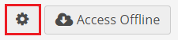
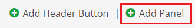
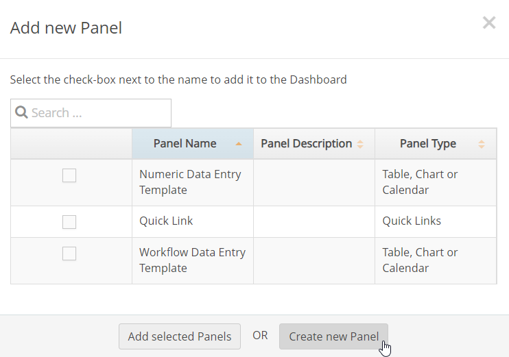
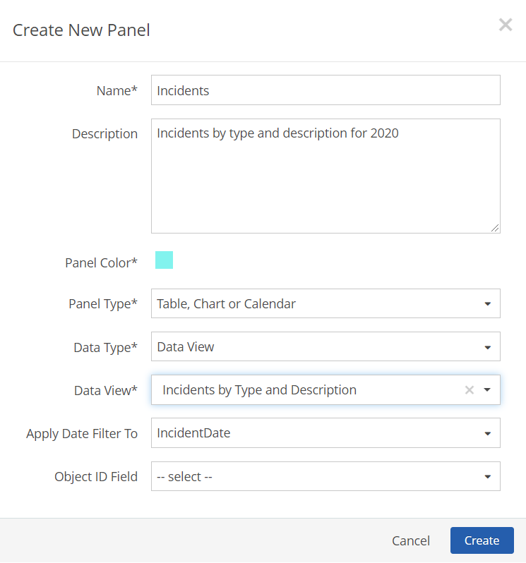
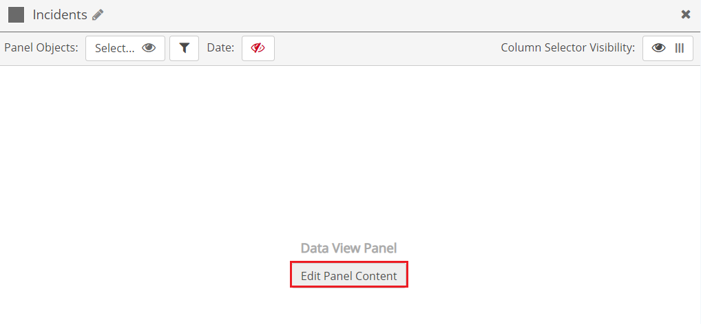
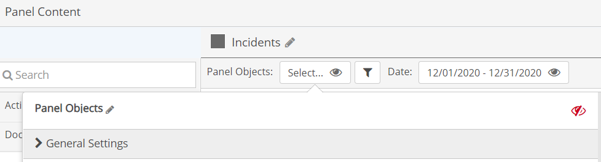
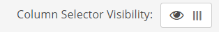
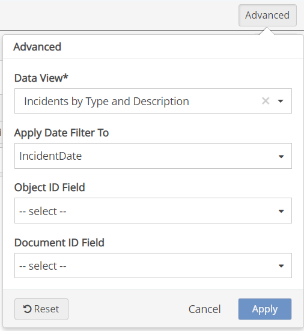

After adding a data view panel to a page, you can configure the panel in these ways:
To add a data view panel to a page:
From the page view, select Settings.

Click Add Panel.

From the Add New Panel dialog, click Create New Panel.
Or, select panel template(s) to add and click Add selected Panels.

For the Data Type, select Data View.
For the Data View, select a saved query.
For the Apply Date Filter To, select a date field from the selected query.
For the Object ID Field, select the page object.
Object ID fields are the ID fields in one of the following EQL tables: Division, Facility, Unit, POI, Requirement, and ComplianceObject. In some cases, other composite versions of these fields (for example 'POI.FacilityID') may be used.
Click Create.

Once the panel has been added to the page, click Edit Panel Contents to configure the settings.
You will be prompted to save the page first before proceeding to the configuration screen.

Panel Objects: Panel object selections will filter records for those associated with the selected objects or by their parent objects. If you want to filter records in the panel by location (i.e., by Facility), you can select panel objects.
To select system objects for filtering data views, see Set Panel Objects Filter. Objects used in the panel may be any subset of the objects selected in the page object selector.
If the Ignore Page Filters panel setting is active, you will override any of the objects selected in the Page Objects filter. If Show Users All Objects in System is active in the page and/or panel settings, users may select any object in the system, regardless of their Management System object permissions. Users will then be able to view event data for any object, but will still require proper permissions in order to edit the event instance form.
You can also configure a Property Filter to filter by properties of associated objects.
If you want to display all data without regard to objects, you can disable the object selector. You can also disable the panel object selector if you want to apply only the objects selected for the page.
To disable the object selector:
Click Apply.

Date Range: The date range defines the period for the data displayed in the panel, and will apply to the 'Apply Date Filter To' date selected in the Create New Panel form.
By default the panel will use the date range selected for the page. However, a date range selector may be enabled for the panel, which will operate independently of the page date selector. You may pre-configure the panel to show the relative period that users will need (such as This Month). You may also decide whether you want users to be able to set a custom date range with specific start and end dates, or use only the pre-configured date range. To configure the panel date range, see Panel Date Selector.
Column Selector Visibility: Use this option to enable or disable the column selector button. When enabled, users can choose to hide or show columns in the table display to customize the view and to select columns for downloading to Excel.

The selected data view, date filter, and other details can be edited after the panel has been created.
To edit the data content for the panel:
Click Edit Panel Contents, then select Advanced.

Select the desired Data View, Apply Date Filter To, Object ID Field, and Document ID Field values for the panel.
Click Apply to apply settings.
You can add additional columns from the Field Selector menu on the left and edit the column display.
See Edit Panel Columns for information on configuring a column.